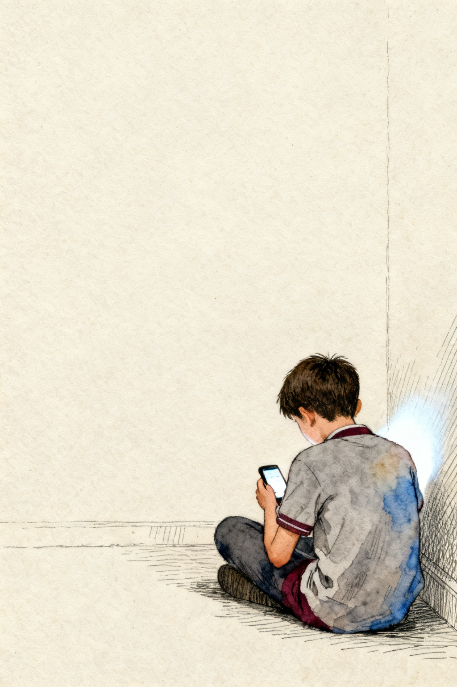
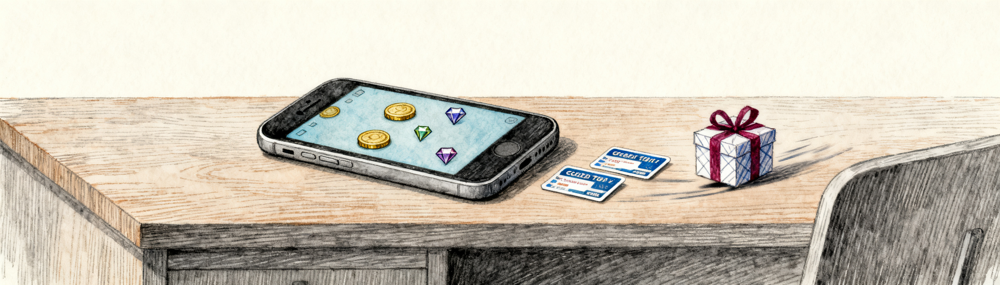
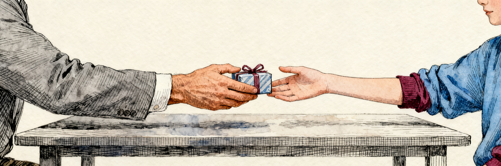
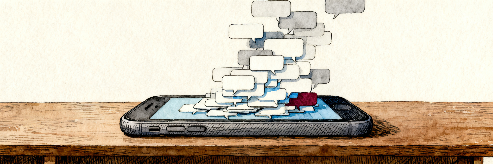
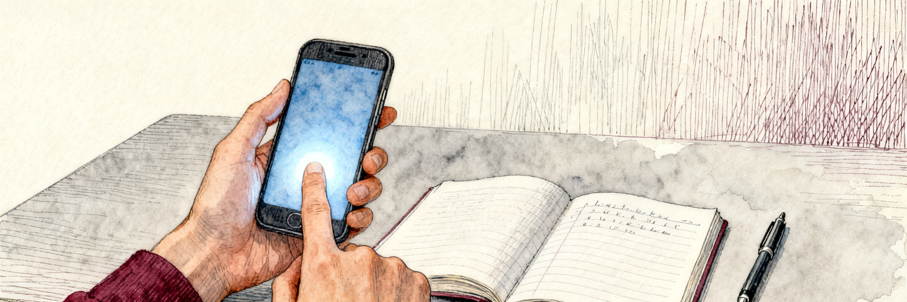

Thailand: a 2019 survey of 2,730 secondary students reported 3 to 5 hours a day; a 2021 research survey of 3,292 students reported an average of 5. The 2019 bar shows the middle of its reported range.

M2 · Listening
“you’re so special”
What it is, how to be safe. Advice from the Australian police.
Thailand: a 2019 survey of 2,730 secondary students reported 3 to 5 hours a day; a 2021 research survey of 3,292 students reported an average of 5. The 2019 bar shows the middle of its reported range.
What is grooming?
Is it a problem in Thailand?
Learn some words.
Watch a message from the police in Australia.
Write a summary.
Two minutes.
What do you think grooming means?
One idea each. Then we will watch.
One way to say it
An adult pretends to be a friend. They give attention and gifts until the young person trusts them — and then they ask for something.
1 in 10
How old?
About one in ten children aged 12 to 17 in Thailand who use the internet say an adult did something sexual to them, or made them do something, online last year.
Boys or girls?
Boys and girls are both affected.
Disrupting Harm Thailand, 2022 · children aged 12–17 who use the internet
You might expect one kind of child. It is not one kind of child.
12–14
More children of this age reported it than children aged 15–17.
girls and boys
Asked if they had received unwanted requests for photos, boys and girls said yes at about the same rate.
your age is the target
118 of the 346 Thai police cases in 2024 involved girls aged 8 to 14. Just 7 involved boys the same age.
Boys are approached just as often. Almost none of them appear in the police record.
It usually begins somewhere a child feels safe — inside a game.
Most children who were offered money or gifts to meet someone said it started in an online game.
Sometimes the gift is game credit — เติมเงินเกม.

Say it
/ɡruːm/
Spell it
groom verb
See it

Say it
/trʌst/
Spell it
trust verb
Use it
She trusted him. She told him things she told no one else.
Say it
/ˈpreʃə/
Spell it
pressure noun
See it

Say it
/ʌnˈkʌmftəbl/
Spell it
uncomfortable adjective
Use it
The messages made her uncomfortable. She did not know where to look.
Say it
/rɪˈpɔːt/
Spell it
report verb
See it

Now that we have learned some important words, let’s see if we can use them.
Complete the five sentences on your worksheet.
Use each word once. You may have to change the word form.
pressure · groom · report · trust · uncomfortable
1. He gave her gifts and called her special, because he wanted something. He was grooming her.
2. She trusted him. She told him things she told no one else.
3. He messaged her ten times a day. She felt pressure to answer.
4. The messages made her uncomfortable. She did not know where to look.
5. She reported him. The police read his messages and arrested him.
Only one of these six lines is never said in the video.
Guess which one, and write the letter in your notebook.
A. "No one would understand us."
B. "You look beautiful."
C. "I'm 15 too."
D. "You're different from other people your age."
E. "Let this be our secret."
F. "Don't listen to what other people say."
Now you are going to watch a young woman describing her experiences of grooming to police detectives in Victoria, a State in Australia.
Part 1 · 0:00–0:34
Watch. Do not write while you watch.
Then check your answer to task 2, and answer these questions:
Part 2 · 1:06–2:58
Watch Part 2.
Then check your answer to task 2, and answer the three questions.
Task 2 — which line was not in the video?
Task 3 — the three questions
Audio only · 1:43
Now something different. This part is only sound — a summary of what we have learned, read aloud.
Task 4 on your worksheet.
This part is audio only. Complete the paragraph.
Write the words in your notebook. The tape is read twice.
The tape — read twice
Now let’s watch the rest of the young woman’s story.
Read each question and write a predicted answer. A guess is enough.
Then watch and correct it.
Questions 6 and 7 ask for your ideas, not only for words you heard.
Part 3 · 4:36–5:22
Watch Part 3. Answer questions 1 to 6.
Correct the prediction you wrote for each one.
Part 4 · 8:49–9:48
Watch Part 4. Answer question 7.
It asks what you think, not only what you heard.
Now let’s put it all together, in our own words.
Task 6 on your worksheet.
Write four sentences in one paragraph — not a list.
Use the words from Words to know.
Grooming is when an adult tricks a young person into trusting them. A man followed a teenage girl on Instagram, made her feel special, and told her to keep it secret. When he put her under pressure, she saved the messages and told someone. If someone online makes you uncomfortable, tell an adult — in Thailand you can call 1300 or 1387.
And if any of this ever happens to you, here is where you can get help.
1300
Social Help Centre.
24 hours. For anyone.
1387
Childline Thailand.
For anyone under 18.
191
Police.
If someone is in danger now.
You can also tell a teacher or your family. Telling someone is not getting yourself into trouble.
Task 7 on your worksheet.
You deserve to be safe.